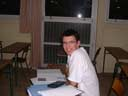

La Miss des miss :
SSSSSSSSSSSSSEKHSSSSSSSS !! Madou a sauvé l'honneur de la classe le soir de la chasse au trésors,bien qu'on n'ai pas gagné on a la chance d'avoir la beauté chez nous!.. Ne croyez pas toutes les conneries en rapport avec son élection...
La K.S. :
- s'occupe (évidemment) des Khestions de Sous
- ses qualités : sérieux, précis, efficace et honnête.
- ses défauts : sérieux, précis, efficace et honnête.
- récolte l'argent commun à diverses occasions (khâlots, repas…)
SSSSSSSSSSSSSEKHSSSSSSSS !! Madou a sauvé l'honneur de la classe le soir de la chasse au trésors,bien qu'on n'ai pas gagné on a la chance d'avoir la beauté chez nous!.. Ne croyez pas toutes les conneries en rapport avec son élection...
La K.S. :
- s'occupe (évidemment) des Khestions de Sous
- ses qualités : sérieux, précis, efficace et honnête.
- ses défauts : sérieux, précis, efficace et honnête.
- récolte l'argent commun à diverses occasions (khâlots, repas…)

Le Sekhs Bzz :
Ah le beau gosse , on pshutt!!!!Franz n'a pas dû se déshabiller devant ses kharrées filles pour qu'elle l'élisent..Une fonction méritée,Leur a t'il promis quelquechose??
Ah le beau gosse , on pshutt!!!!Franz n'a pas dû se déshabiller devant ses kharrées filles pour qu'elle l'élisent..Une fonction méritée,Leur a t'il promis quelquechose??
Le Tan  :
:
souvent en retard le
matin Tibo charge Coach ou Arnal d'écrire sa contre pétrie. c'est ça d'aller
déjeuner
à moins 5.Parfois il
a du mal à faire les soustractions nécessaires au calcul
du tan,il
change en fin de journée la valeur de tangante concernée.
- c'est le Chronos des heures du matin.
- orne quotidiennement le tableau de ses contrepèteries les plus recherchées (déclez donc les sons que débite sa bouche).
- compte les jours, heures, minutes et secondes de détention qu'il vous reste à passer en cours.
- véritable ami des veilles de vacances, la tentation de l'égorger est grande à l'issue de celles-ci.
Le PDM (préfet des mœurs) :
Je ne l'ai pas vu en plein exercice de sa fonction, l'a-t-il fait en coulisses ,en tous cas on a réussi à atteidre un tan PDM 9.(ils prennent tout au sérieux ces HX4)!
-
créature à part
- protège la vertu des jeunes files des jeunes hommes aux yeux brillants de désir.
- aide à la création des groupes d'études… mixtes bien sûr.
- a parfois lui aussi des sentiments humains… Méfiez-vous !!!
- protège la vertu des jeunes files des jeunes hommes aux yeux brillants de désir.
- aide à la création des groupes d'études… mixtes bien sûr.
- a parfois lui aussi des sentiments humains… Méfiez-vous !!!


Le Suicide :
Merci suicide pour toutes
ces pauses, le temps tend ainsi moins vite vers l'infini. L'efficacité
de Marie laure tient à sa portion magique (mélange de politesse et de"
je ne me laisse pas faire!"qui fait d'elle le fantôme des profs ,ces
derniers dès qu'ils voient sa main levée font semblant de rien , pauvre
suicide quand elle doit poser une question en fin d'heure!!!non je ne
fais aucune allusion!!(Cf la rubrique les profs)
-
élève khrâsh test, il signale les heures de pause.

Le
(Sombre Individu Génétiquement Mal Achevé)
:
"tu me fais une liste pour les olympiades,une pour ceux qui prennet chimie ,une pour ceux qui ne sont pas sûre de continuer les olympiades ,une pour les TIPE chimie et une autre pour ..." Ce fût la demande d'un courtois prof!!un beau jour de novembre.
"tu me fais une liste pour les olympiades,une pour ceux qui prennet chimie ,une pour ceux qui ne sont pas sûre de continuer les olympiades ,une pour les TIPE chimie et une autre pour ..." Ce fût la demande d'un courtois prof!!un beau jour de novembre.
-
votre bête noire(NIARF NIARF NIARF).
- gère la roulette des khôlles.
-se contenter de rigoler quand un pigeon qui n'aura pas lu le carnet lèvera la main quand sera posée la question : " Qui veux être ? ".
- gère la roulette des khôlles.
-se contenter de rigoler quand un pigeon qui n'aura pas lu le carnet lèvera la main quand sera posée la question : " Qui veux être ? ".
Le Z (Zed) :
"conscience professionnelle de pointe!!"je me rapelle le premier jour quand francky a demandé si on avait élue un Z,soudainement il prnt la liste de classe et je vois ses yeux descendre petit à petit ensuite il dit:PAWLIKI ALEXANDRE.soulagement pour ceux qui on lu le carnet du BITHUT la veille et savent de quoi sagit-t-il.Il c'est permis une pré retraite à partir du mois de MAI.
- être sublime par lequel tout commence et tout finit.
- il tient la feuille des absences et le cahier de textes.
- il est le cordon ombilical reliant la classe à l'administration.
"conscience professionnelle de pointe!!"je me rapelle le premier jour quand francky a demandé si on avait élue un Z,soudainement il prnt la liste de classe et je vois ses yeux descendre petit à petit ensuite il dit:PAWLIKI ALEXANDRE.soulagement pour ceux qui on lu le carnet du BITHUT la veille et savent de quoi sagit-t-il.Il c'est permis une pré retraite à partir du mois de MAI.
- être sublime par lequel tout commence et tout finit.
- il tient la feuille des absences et le cahier de textes.
- il est le cordon ombilical reliant la classe à l'administration.

Le C.D.O. (chef d'orchestre) :
Je me rappelle pas vraiment de mon élection!Souvent je chantes mal ,je ne connais pas les paroles ,et même il m'arrive de crier TK HX4 .(sous l'emprise de ..)je commence à chanter et que personne ne suit...Je parle fort malgré moi.Malheureux les meupeux qui ont perdu une partie de laur audition en sursautant à un TK MEUPEU.
- on le reconnaît facilement à sa grosse (....) voix
- un mystérieux instinct le pousse à lancer les chants
- en cure ntensive au foyer
Je me rappelle pas vraiment de mon élection!Souvent je chantes mal ,je ne connais pas les paroles ,et même il m'arrive de crier TK HX4 .(sous l'emprise de ..)je commence à chanter et que personne ne suit...Je parle fort malgré moi.Malheureux les meupeux qui ont perdu une partie de laur audition en sursautant à un TK MEUPEU.
- on le reconnaît facilement à sa grosse (....) voix
- un mystérieux instinct le pousse à lancer les chants
- en cure ntensive au foyer

Lourd:
"Quelle poids ,quelle masse ,quelle densité ,quelle
"Quelle poids ,quelle masse ,quelle densité ,quelle
homogénéité
,
Oula
-Oula-Ouala-Oula..."ça vous rapelle quelquechose non??

La miss
SSSSSSSSSSSSSSSSSSSSSSSSSEKHSSSSSSSSSSSSSSSSSSSS
c'est peut être et sans doute la plus discrète des miss. Gare au Bizuth qui ne la SEKHS pas.